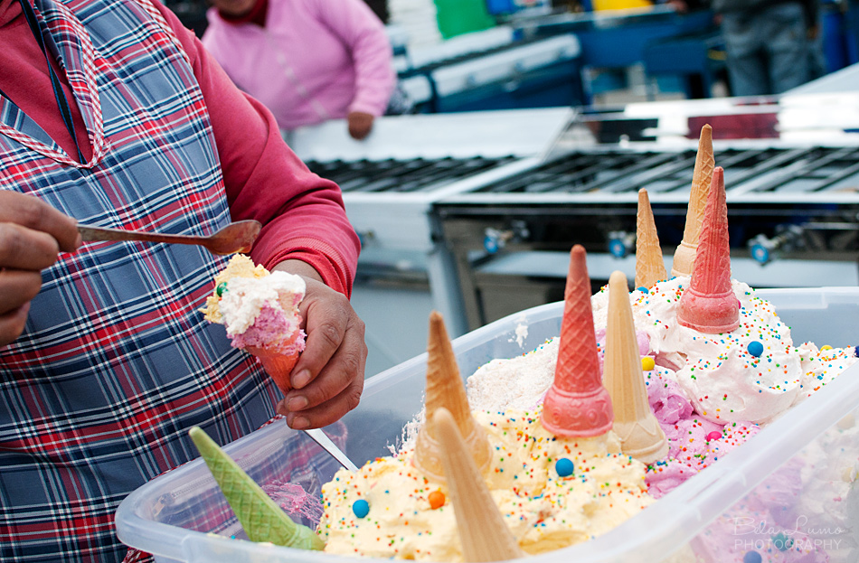
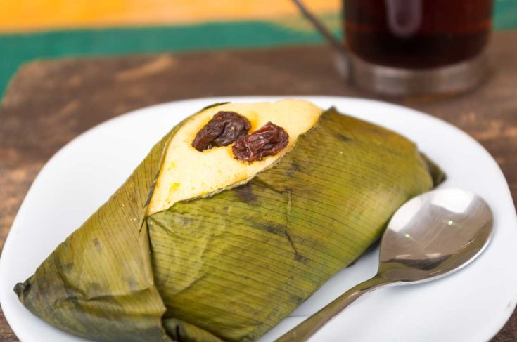

1. Tres Leches is a sponge cake soaked in three kinds of milk: evaporated milk, condensed
milk, and heavy cream. It's incredibly moist and sweet, often topped with whipped cream and fresh fruit.


2. Espumilla is a light and airy dessert made from whipped egg whites, sugar, and fruit
pulp, typically guava or passion fruit. It's similar to meringue but has a fruity twist.

5. Quimbolito is a steamed corn cake wrapped in banana leaves, often enjoyed as a snack or
dessert. It's sweet and has a unique, moist texture.